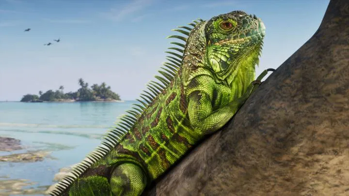

Опубликовано:
- В меню «Прогресс» GTA 6 около 3000 позиций: транспорт, оружие, животные, коллекции, занятия.
- Главные коллекционки — 480 карточек, 125 кокаиновых фламинго, 33 подводные находки, журналы, медитации и места WAiNK.
- Для 100% почти нигде не нужно собирать всё — смотрите чек-лист из 35 пунктов.



Все виды коллекционок
| Что | Сколько | Для 100% | Где и как |
|---|---|---|---|
| Коллекционные карточки | 480 в 18 наборах | 15 наборов | жёлтые телефонные будки, ящики с инструментами, столы и стены в зданиях |
| Кокаиновые фламинго | 125 | 100 | розовые садовые фламинго с чёрно-белым клювом — стрелять; 50 штук открывают чит Inflatable Flamingo |
| Подводные находки | 33 | все 33 | затонувшие корабли и рифы; закрываются вместе с 7 наборами сокровищ Кентона Риса |
| Сокровища Кентона | 7 наборов | 5 наборов | фиолетовые сундуки на дне, металлоискатель; сдавать Кентону Рису |
| Журналы, книги и комиксы | 27 + 7 книжных обменов | 30 из 34 | найти и прочитать |
| Медитации | 18 | 15 | Джейсон и Лусия считаются отдельно; 50 медитаций открывают чит Fast Forward |
| Места WAiNK | 31 достопримечательность, 35 диковинок, 23 скульптуры, 23 тега No Flusher | 100 | сканировать приложением WAiNK пешком |
| Стили | 79 (13 у Джейсона, 15 у Лусии, 17 тату, 34 часов) | 70 | татуировки из журналов сканировать WAiNK, часы — на точках банд; 10 и 20 часов открывают читы времени |
| Уникальные плейлисты | 2 | 2 | отсканировать нужные афиши |
| Трюки | 397: 130 прыжков, 202 моста, 40 «на ребре», 25 бейсджампов | 300 | пройденные отмечаются на карте (фильтр «Исследование») |
| Машины Уаймана | 5 | — | только в Ultimate Edition |
Кокаиновые фламинго
Самая «GTA-шная» коллекционка игры: розовые садовые фламинго, внутри которых спрятан кокаин. Отличить их просто — у нужных чёрно-белый клюв, а жёлто-чёрные — обычная декорация. Фламинго нужно расстрелять; выпавший товар подбирать не обязательно, но его можно сдать скупщику — он идёт в зачёт «$100 000 за наркотики». Всего фламинго 125, для 100% нужно 100, а 50 открывают чит Inflatable Flamingo.
Сокровища Кентона и подводные находки
Кентон Рис — персонаж с побочной цепочкой Maritime Disputes. Он отмечает на карте сокровища затонувших кораблей фиолетовыми сундуками: нужно нырнуть, найти клад металлоискателем, выкопать его со дна и привезти Кентону. Наборов 7; для 100% хватит 5, но все 33 подводные находки закрываются только полным комплектом. Прогресс: Прогресс → Персонажи → Кентон Рис.
Что ещё считает меню «Прогресс»
| Раздел | Всего | Подробно |
|---|---|---|
| Транспорт | 557 | 277 базовых моделей + 280 особых (Girlypop, Lowriders, Donks, Leonida Man и др.) |
| Оружие | 196 | 53 ствола, 9 холодного, 4 взрывчатки, 130 вариантов |
| Животные | 255 | 61 для охоты, 60 птиц, 35 рыб, 34 породы кошек и собак, 18 млекопитающих, 18 водных, 6 рептилий, 23 прочих |
| Снаряжение | 12 | |
| Банды | 9 | 39 точек |
| Ограбления | — | 72 круглосуточных магазина, 14 винных, 23 фастфуда, 20 ювелирных, 15 ломбардов, 7 микрозаймов, 22 банка |
| Испытания | 80 | 8 категорий |
| Читы | 61 | после финала сюжета |
Животных изучают биноклем, машины — приложением WAiNK. Подробнее о видах — в справочнике: виды животных, транспорт.
Точные места карточек, фламинго и сокровищ появятся на интерактивной карте Леониды — с отметками «нашёл / не нашёл».
Карта и регионы →Частые вопросы
Сколько коллекционок в GTA 6?
В базе «Прогресс» около 3000 позиций — от машин и животных до карточек. Собираемых предметов в узком смысле — карточки (480), кокаиновые фламинго (125), подводные находки (33), журналы и книги (34), медитации (18) и др.
Где смотреть найденные коллекционки?
Карта → Прогресс. Некоторые подкатегории появляются только после первой находки.
Можно ли пропустить коллекционки?
Некоторые предметы в сюжетных миссиях — да, переигровки нет. Остальное можно собирать после финала.
Источники: PowerPyx, «GTA 6 Collectible Guide – Progress Database», 19.11.2026; GTABase, «GTA 6 100% Completion Guide», 19.11.2026; Push Square, «GTA 6 Guide: All Guides & Collectibles», 19.11.2026; Mobalytics, «Full Collectible List», 19.11.2026.